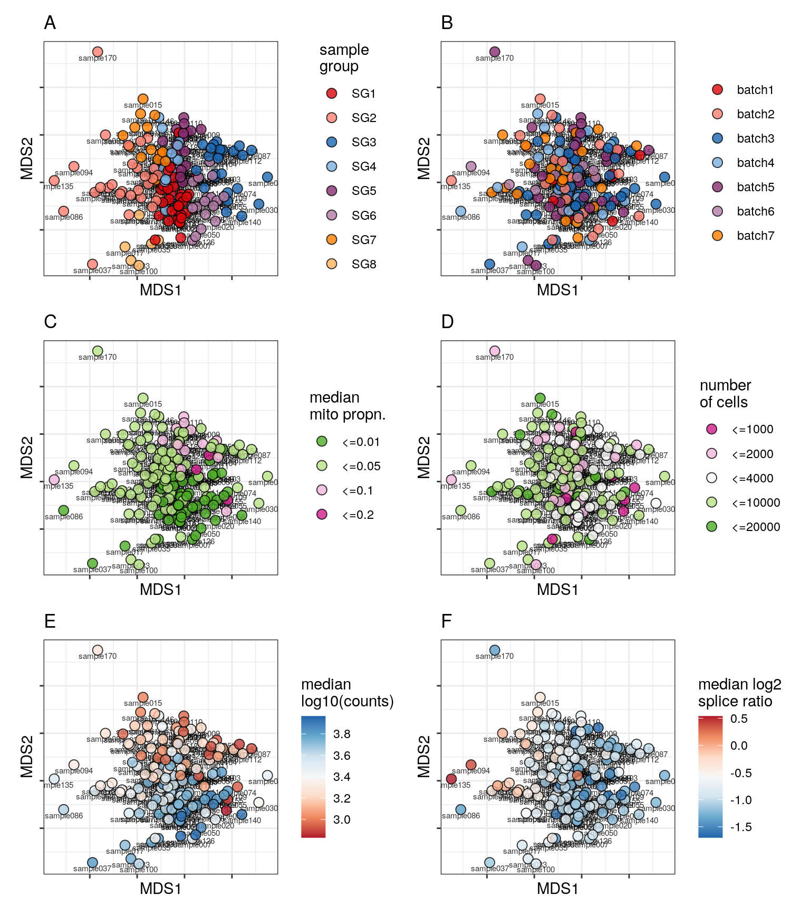
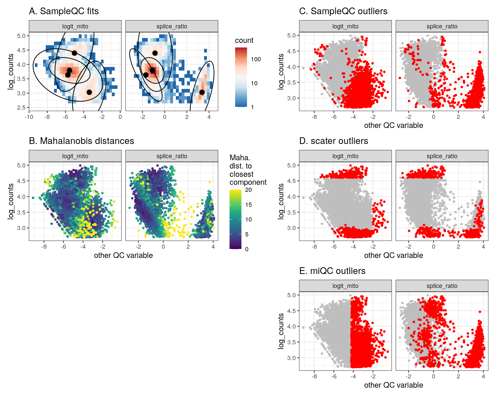
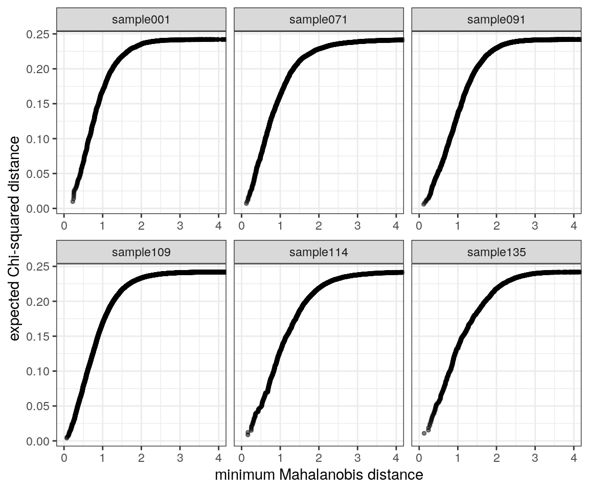

SampleQC: Generating plots for paper
Will Macnair
Institute for Molecular Life Sciences, University of Zurich, SwitzerlandSwiss Institute of Bioinformatics (SIB), University of Zurich, SwitzerlandAugust 24, 2021
Last updated: 2021-08-24
Checks: 5 2
Knit directory: SampleQC_analysis/
This reproducible R Markdown analysis was created with workflowr (version 1.6.2). The Checks tab describes the reproducibility checks that were applied when the results were created. The Past versions tab lists the development history.
The R Markdown file has unstaged changes. To know which version of the R Markdown file created these results, you’ll want to first commit it to the Git repo. If you’re still working on the analysis, you can ignore this warning. When you’re finished, you can run wflow_publish to commit the R Markdown file and build the HTML.
The global environment had objects present when the code in the R Markdown file was run. These objects can affect the analysis in your R Markdown file in unknown ways. For reproduciblity it’s best to always run the code in an empty environment. Use wflow_publish or wflow_build to ensure that the code is always run in an empty environment.
The following objects were defined in the global environment when these results were created:
| Name | Class | Size |
|---|---|---|
| q | function | 1008 bytes |
The command set.seed(20210311) was run prior to running the code in the R Markdown file. Setting a seed ensures that any results that rely on randomness, e.g. subsampling or permutations, are reproducible.
Great job! Recording the operating system, R version, and package versions is critical for reproducibility.
Nice! There were no cached chunks for this analysis, so you can be confident that you successfully produced the results during this run.
Great job! Using relative paths to the files within your workflowr project makes it easier to run your code on other machines.
Great! You are using Git for version control. Tracking code development and connecting the code version to the results is critical for reproducibility.
The results in this page were generated with repository version 0192172. See the Past versions tab to see a history of the changes made to the R Markdown and HTML files.
Note that you need to be careful to ensure that all relevant files for the analysis have been committed to Git prior to generating the results (you can use wflow_publish or wflow_git_commit). workflowr only checks the R Markdown file, but you know if there are other scripts or data files that it depends on. Below is the status of the Git repository when the results were generated:
Ignored files:
Ignored: .Rprofile
Ignored: analysis/qc01_prep_data_cache/
Ignored: analysis/qc02_distns_cache/
Ignored: analysis/qc03_sims_cache/
Ignored: data/miqc/
Ignored: output/qc07_comparisons/
Untracked files:
Untracked: _workflowr.yml
Untracked: analysis/.qc04_real.Rmd.swp
Untracked: analysis/.qc05_citeseq.Rmd.swp
Untracked: analysis/.qc06_ks.Rmd.swp
Untracked: analysis/.qc07_comparisons.Rmd.swp
Untracked: analysis/figure/
Untracked: output/qc03_sims/mahalanobis_qq_plot_sim.pdf
Untracked: output/qc03_sims/mahalanobis_qq_plot_sim.png
Unstaged changes:
Modified: analysis/qc01_prep_data.Rmd
Modified: analysis/qc02_distns.Rmd
Modified: analysis/qc03_sims.Rmd
Modified: analysis/qc04_real.Rmd
Modified: code/qc03_sims.R
Modified: output/qc01_prep_data/Campbell_qc_dt.txt.gz
Modified: output/qc01_prep_data/HGSOC_qc_dt.txt.gz
Modified: output/qc01_prep_data/Macosko_qc_dt.txt.gz
Modified: output/qc01_prep_data/Shekhar_qc_dt.txt.gz
Modified: output/qc01_prep_data/Wang_qc_dt.txt.gz
Modified: output/qc01_prep_data/Zeisel_qc_dt.txt.gz
Modified: output/qc02_distns/selected_biaxials.pdf
Modified: output/qc02_distns/selected_biaxials.png
Modified: output/qc02_distns/selected_marginals.pdf
Modified: output/qc02_distns/selected_marginals.png
Modified: output/qc03_sims/outs_scater_sim_ok_multimodal.pdf
Modified: output/qc03_sims/outs_scater_sim_ok_multimodal.png
Modified: output/qc03_sims/outs_scater_sim_ok_unimodal.pdf
Modified: output/qc03_sims/outs_scater_sim_ok_unimodal.png
Modified: output/qc03_sims/outs_scater_sim_out_multimodal.pdf
Modified: output/qc03_sims/outs_scater_sim_out_multimodal.png
Modified: output/qc03_sims/outs_scater_sim_out_unimodal.pdf
Modified: output/qc03_sims/outs_scater_sim_out_unimodal.png
Modified: output/qc03_sims/per_celltype_bias_abs.pdf
Modified: output/qc03_sims/per_celltype_bias_abs.png
Modified: output/qc03_sims/per_celltype_bias_prop.pdf
Modified: output/qc03_sims/per_celltype_bias_prop.png
Modified: output/qc03_sims/pr_curves_by_modality.pdf
Modified: output/qc03_sims/pr_curves_by_modality.png
Modified: output/qc03_sims/pr_curves_by_sample.pdf
Modified: output/qc03_sims/pr_curves_by_sample.png
Modified: output/qc03_sims/pr_curves_overall.pdf
Modified: output/qc03_sims/pr_curves_overall.png
Note that any generated files, e.g. HTML, png, CSS, etc., are not included in this status report because it is ok for generated content to have uncommitted changes.
These are the previous versions of the repository in which changes were made to the R Markdown (analysis/qc04_real.Rmd) and HTML (docs/qc04_real.html) files. If you’ve configured a remote Git repository (see ?wflow_git_remote), click on the hyperlinks in the table below to view the files as they were in that past version.
| File | Version | Author | Date | Message |
|---|---|---|---|---|
| Rmd | 86834a1 | wmacnair | 2021-08-10 | First commit of everything |
Setup / definitions
Libraries
library('SampleQC')
library('assertthat')
library('ggplot2')
library('patchwork')
library('scales')
library('stringr')
library('forcats')
library('data.table')
library('magrittr')
seed = 20200725
set.seed(seed)Inputs
# where is snRNAseq file?
qc_f = 'data/snRNAseq/sn_qc_dt_anon_2021-07-25.txt.gz'
qc_obj_f = 'data/snRNAseq/sampleQC_obj_2021-07-25.rds'
qc_names = c('log_counts', 'logit_mito', 'splice_ratio')
annots_disc = c('donor_id', 'condition', 'batch', 'source')
annots_cont = c('med_splice')Helper functions
source('code/qc03_sims.R')Outputs
# where to save?
save_dir = 'output/qc04_real'
if (!dir.exists(save_dir))
dir.create(save_dir)
# annotations to save
disc_ls = c('group_id', 'batch', 'mito_cat', 'N_cat')
cont_ls = c('med_counts', 'med_splice')
annot_ls = c(disc_ls, cont_ls)
# exclude clusters with above this splice_ratio
splice_cut = 3
# what figs to save?
formats = c('png', 'pdf')
outs_scater_f = file.path(save_dir, 'outs_scater_bio.%s')
outs_distns_f = file.path(save_dir, 'outs_distns_bio.%s')
kept_distns_f = file.path(save_dir, 'kept_distns_bio.%s')
maha_qqs_f = file.path(save_dir, 'mahalanobis_qq_plot_bio.%s')Load inputs
Processing / calculations
qc_dt = qc_f %>% fread %>%
.[, med_splice := median(splice_ratio), by=sample_id] %>%
make_qc_dt(qc_names = qc_names)# K_list = c(4, 4, 3, 2, 1, 3, 4, 4, 4)
K_list = c(3, 4, 1, 4, 2, 1, 3, 4)
# K_list = c(1, 1, 1, 1, 1, 1, 1, 1)
if (file.exists(qc_obj_f)) {
qc_obj = readRDS(qc_obj_f)
} else {
# find sample groups
set.seed(seed)
qc_obj = calc_pairwise_mmds(qc_dt, qc_names,
annots_disc = annots_disc, annots_cont = annots_cont,
n_cores = 16)
print(table(colData(qc_obj)$group_id))
# fit model
set.seed(seed)
qc_obj = fit_sampleqc(qc_obj, K_list = K_list, mcd_alpha = 0.3)
# save outputs
make_sampleqc_report(qc_obj, save_dir, 'snRNAseq')
# specify outlier cluster
saveRDS(qc_obj, file = qc_obj_f)
}# extract component means
group_ids = levels(colData(qc_obj)$group_id)
beta_ks = group_ids %>%
lapply(function(g) {
beta_k = metadata(qc_obj)$fit_list[[g]]$beta_k
mu_0 = metadata(qc_obj)$fit_list[[g]]$mu_0
beta_k = sweep(beta_k, 2, mu_0, '+')
assert_that( all(abs(colMeans(beta_k) - mu_0) < 1e-10) )
return(beta_k)
})
# get clusters with positive splice ratio
splice_idx = qc_names == 'splice_ratio'
exc_clusters = lapply(beta_ks,
function(beta_k_mat) which(beta_k_mat[, splice_idx] > splice_cut)
) %>% setNames(group_ids)
exc_clusters = exc_clusters[ sapply(exc_clusters, function(x) length(x) > 0) ]
# get outliers
outliers_dt = get_outliers(qc_obj, exc_clusters = exc_clusters)# calc scater outliers
scater_dt = calc_scater_dt(qc_dt)
set.seed(123)
miqc_dt = calc_miqc_dt(qc_dt)(only one component identified)Analysis
Embeddings of samples
for (sel_embed in c('UMAP', 'MDS')) {
cat('### ', sel_embed, '\n')
g_list = lapply(seq_along(annot_ls), function(ii) {
annot_i = annot_ls[[ii]]
var_type = ifelse(annot_i %in% disc_ls, 'discrete', 'continuous')
SampleQC:::.plot_one_embedding(qc_obj, annot_i, var_type, sel_embed) +
labs( title=LETTERS[[ii]] )
})
g = wrap_plots(g_list, ncol=2)
print(g)
png_f = sprintf('%s/real_qc_embed_disc_%s.png', save_dir, sel_embed)
ggsave(png_f, g, h=9, w=8)
cat('\n\n')
}UMAP

MDS

Plot SampleQC model fits and outliers over QC biaxials
group_list = levels(qc_obj$group_id)
for (g in group_list) {
cat('### ', g, '{.tabset}\n')
# which samples?
samples_g = sort(colData(qc_obj)$sample_id[ colData(qc_obj)$group_id == g ])
# # just do a handful
# samples_g = sample(samples_g, min(5, length(samples_g))) %>% sort
for (s in samples_g) {
cat('#### ', s, ' \n')
g_fit = plot_fit_over_biaxials(qc_obj, s)
g_out = plot_outliers(qc_obj, s)
g = g_fit / g_out
print(g)
cat('\n\n')
}
}Plot outliers
# assemble plot
s = 'sample017'
g_fit = plot_fit_over_biaxials(qc_obj, s) +
labs( title = 'A. SampleQC fits' )
g_maha = plot_maha_dists(qc_obj, s) +
labs( title = 'B. Mahalanobis distances' )
g_qc = plot_outliers(qc_obj, s, outliers_dt) +
labs( title = 'C. SampleQC outliers' )
g_scat = plot_outliers(qc_obj, s, scater_dt) +
labs( title = 'D. scater outliers' )
g_miqc = plot_outliers(qc_obj, s, miqc_dt) +
labs( title = 'E. miQC outliers' )
g = list(g_fit, g_maha, plot_spacer(), g_qc, g_scat, g_miqc) %>%
wrap_plots(ncol = 2, byrow = FALSE)
# save files
for (f in formats)
ggsave(sprintf(outs_scater_f, f), g, h = 8, w = 10)
# plot
print(g)
Plot Mahalanobis distances
set.seed(seed)
sel_samples = qc_obj$sample_id %>% sample(6)
mahas_dt = calc_mahas_dt(qc_obj)
# do plot
g = plot_maha_qqs(mahas_dt, sel_samples)
for (f in formats)
ggsave(sprintf(maha_qqs_f, f, f), g, h = 5, w = 8)
print(g)
sessionInfo()R version 4.0.0 (2020-04-24)
Platform: x86_64-pc-linux-gnu (64-bit)
Running under: Ubuntu 18.04.5 LTS
Matrix products: default
BLAS: /usr/local/R/R-4.0.0/lib/libRblas.so
LAPACK: /usr/local/R/R-4.0.0/lib/libRlapack.so
locale:
[1] LC_CTYPE=C LC_NUMERIC=C
[3] LC_TIME=en_CA.UTF-8 LC_COLLATE=en_CA.UTF-8
[5] LC_MONETARY=en_CA.UTF-8 LC_MESSAGES=en_CA.UTF-8
[7] LC_PAPER=en_CA.UTF-8 LC_NAME=C
[9] LC_ADDRESS=C LC_TELEPHONE=C
[11] LC_MEASUREMENT=en_CA.UTF-8 LC_IDENTIFICATION=C
attached base packages:
[1] parallel stats4 stats graphics grDevices utils datasets
[8] methods base
other attached packages:
[1] flexmix_2.3-17 lattice_0.20-41
[3] scater_1.18.3 SingleCellExperiment_1.12.0
[5] SummarizedExperiment_1.20.0 Biobase_2.50.0
[7] GenomicRanges_1.42.0 GenomeInfoDb_1.26.2
[9] IRanges_2.24.1 S4Vectors_0.28.1
[11] BiocGenerics_0.36.0 MatrixGenerics_1.2.1
[13] matrixStats_0.60.0 viridis_0.5.1
[15] viridisLite_0.4.0 RColorBrewer_1.1-2
[17] magrittr_2.0.1 data.table_1.14.0
[19] forcats_0.5.1 stringr_1.4.0
[21] scales_1.1.1 patchwork_1.1.1
[23] ggplot2_3.3.5 assertthat_0.2.1
[25] SampleQC_0.6.1 BiocStyle_2.18.1
[27] colorout_1.2-2 BiocManager_1.30.10
[29] workflowr_1.6.2
loaded via a namespace (and not attached):
[1] segmented_1.3-4 bitops_1.0-6
[3] fs_1.5.0 rprojroot_2.0.2
[5] tools_4.0.0 irlba_2.3.3
[7] utf8_1.2.2 R6_2.5.0
[9] vipor_0.4.5 uwot_0.1.10
[11] DBI_1.1.1 colorspace_2.0-2
[13] nnet_7.3-14 withr_2.4.2
[15] tidyselect_1.1.0 gridExtra_2.3
[17] compiler_4.0.0 git2r_0.28.0
[19] BiocNeighbors_1.8.2 DelayedArray_0.16.2
[21] labeling_0.4.2 mvtnorm_1.1-2
[23] mvnfast_0.2.7 digest_0.6.27
[25] mixtools_1.2.0 R.utils_2.10.1
[27] rmarkdown_2.10 XVector_0.30.0
[29] pkgconfig_2.0.3 htmltools_0.5.1.1
[31] sparseMatrixStats_1.2.0 highr_0.9
[33] rlang_0.4.11 DelayedMatrixStats_1.12.2
[35] farver_2.1.0 generics_0.1.0
[37] mclust_5.4.7 BiocParallel_1.24.1
[39] gtools_3.9.2 R.oo_1.24.0
[41] dplyr_1.0.3 BiocSingular_1.6.0
[43] RCurl_1.98-1.2 modeltools_0.2-23
[45] GenomeInfoDbData_1.2.4 scuttle_1.0.4
[47] Matrix_1.3-2 ggbeeswarm_0.6.0
[49] Rcpp_1.0.7 munsell_0.5.0
[51] fansi_0.5.0 R.methodsS3_1.8.1
[53] lifecycle_1.0.0 stringi_1.7.3
[55] whisker_0.4 yaml_2.2.1
[57] MASS_7.3-53 zlibbioc_1.36.0
[59] grid_4.0.0 promises_1.1.1
[61] crayon_1.4.1 beachmat_2.6.4
[63] splines_4.0.0 knitr_1.33
[65] pillar_1.6.2 igraph_1.2.6
[67] codetools_0.2-18 glue_1.4.2
[69] evaluate_0.14 vctrs_0.3.8
[71] httpuv_1.5.5 gtable_0.3.0
[73] purrr_0.3.4 kernlab_0.9-29
[75] xfun_0.25 rsvd_1.0.3
[77] later_1.1.0.1 survival_3.2-7
[79] tibble_3.1.3 beeswarm_0.2.3
[81] ellipsis_0.3.2